Screenshots: captured from a live running instance, not mock-ups
Dataset note. Every figure shows a synthetic dataset —
4 fictional programs on reserved example.com / example.test
domains, built by running the real synchronisation pipeline three times.
Credentials shown are placeholders. No real bug bounty program or credential appears
anywhere in this document.
Scope note. This product is for authorized bug bounty research. It is an
inventory, change-detection and prioritisation system. It performs no scanning,
no exploitation and no active testing; the only hosts it contacts are the bug bounty
platform APIs themselves.
Contents
1The problem, and the loop that solves it
UC-01Connect a bug bounty platform
UC-02Import programs and authorized scope
UC-03Decide what deserves attention today
UC-04Find the assets worth working on
UC-05Understand why an asset ranks where it does
UC-06Confirm research is actually authorized
UC-07Track what the provider changed
UC-08Audit an asset's full history
UC-09Configure the AI provider and key
UC-10Operate with no AI key at all
UC-11Work in Vietnamese, light or dark
2Safety guarantees enforced in code
3Feature matrix and current limitations
1 · The problem, and the loop that solves it
A bug bounty researcher's scarcest resource is attention. Programs publish hundreds of
in-scope assets, quietly add and remove them, change severity ceilings and rewrite scope
instructions — and nobody sends a notification. The researcher who notices a new
bounty-eligible API three hours after it appears has an advantage that decays fast.
This product turns that scattered, perishable information into a private, accumulating
asset inventory with a memory.
Four principles the implementation actually enforces
Authorization comes from provider data, never from AI. The safety gate reads
no model output at all, so nothing a model produces can move an asset into scope.
The application owns the score. A model supplies seven dimension estimates;
the final Opportunity Score is a deterministic weighted sum computed in application code.
Rule-based output is never dressed up as AI. Every evaluation records which
engine produced it, and the interface labels it.
Nothing is faked. No fabricated metrics, no synthetic "connected" states, and
an unevaluated asset shows —, never a score of zero.
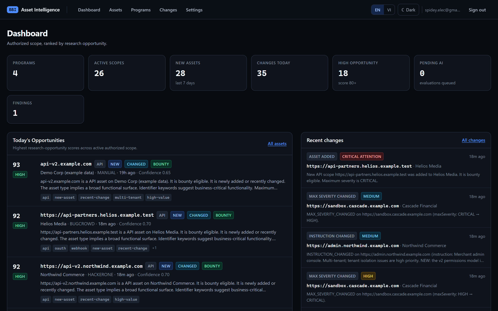
Figure 1. The dashboard in dark mode. Every figure on the page is a real
aggregate over stored rows; cards for features holding no data yet are omitted rather
than shown as zero.
Use case UC-01
Connect a bug bounty platform
Actor
Researcher (single-user install)
Goal
Give the platform read access to the programs they are a member of
Pre
An API token issued by the provider
Result
Credentials encrypted at rest; the true connection state is displayed
Open Settings → API Integrations. Five providers are listed with their real state.
On a provider card, press Configure. The form is generated from that adapter's own
credential schema — HackerOne asks for an API username and token, YesWeHack for email,
password and an optional TOTP code.
Save. The value is encrypted with AES-256-GCM before it reaches the database.
Press Test Connection. A single minimal API call is made server-side.
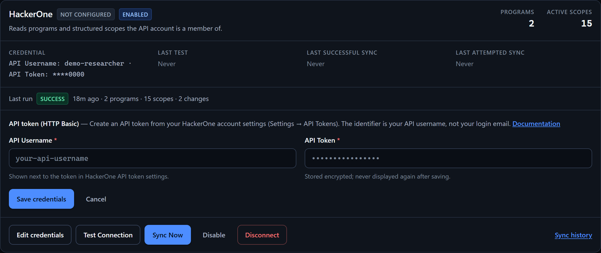
Figure 2. The HackerOne integration card with its credential form open.
Note the stored credential is shown only as API Token: ****0000 —
a non-reversible hint. The card reports NOT CONFIGURED because the credential has
not been verified yet, even though it is stored and the integration is enabled.
Credential security. The API key is write-only by construction.
No endpoint and no page in the application returns it, the plaintext never reaches browser
JavaScript, structured logs redact it by field name, and a ciphertext is bound to its
provider so a row copied between providers fails to decrypt rather than silently
authenticating against the wrong service.
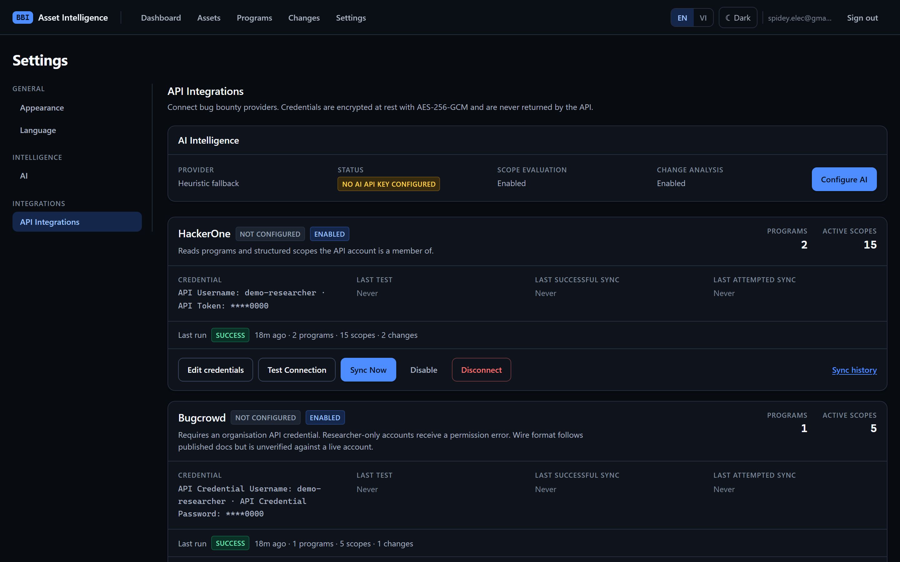
Figure 3. All five providers on one page. Connection states are honest and
distinct: NOT CONFIGURED, AUTH ERROR, PERMISSION ERROR,
RATE LIMITED, API ERROR, DISABLED. A success state is never
synthesised.
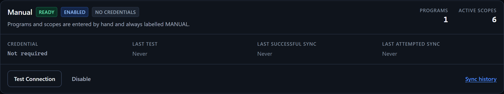
Figure 4. The Manual provider reports READY, never CONNECTED — there
is no remote API to connect to. CONNECTED is reserved for real integrations, so the badge
keeps its meaning.
Use case UC-02
Import programs and authorized scope
Actor
Researcher
Goal
Pull every program and in-scope asset into a local inventory
Pre
A configured, enabled integration
Result
Normalized programs and scopes, version 1 snapshots, an audited sync run
Press Sync Now. The adapter paginates the provider API with bounded retries,
exponential backoff with jitter, and Retry-After support.
Each record is normalized: provider-native asset types collapse onto one vocabulary
(DOMAIN · WILDCARD · URL · API · IP · CIDR · ANDROID · IOS · REPOSITORY · OTHER),
and identifiers are canonicalised so the same asset never lands twice.
A SHA-256 content hash is taken over the meaningful fields only. Provider timestamps and
raw payloads are deliberately excluded.
Records are upserted, a scope version is written, and differences become change events.
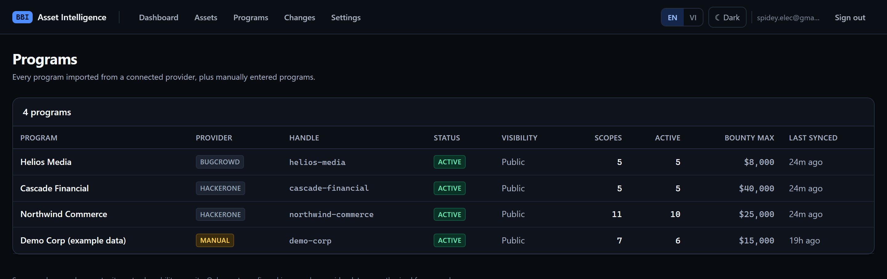
Figure 5. Programs imported from two providers plus one manual entry, with
total and active scope counts, bounty ceiling and last sync time.
Idempotency is the load-bearing property. Re-running an identical
sync creates no duplicate program or scope, no new version, no false change event and no
duplicate AI job — only lastSeenAt moves. This is what makes an
hourly schedule safe, and it is covered by dedicated tests.
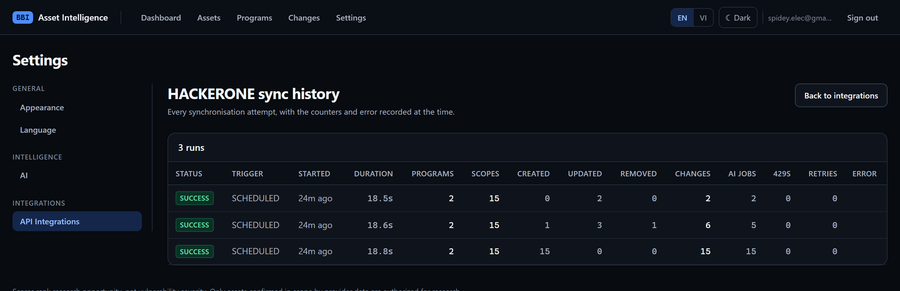
Figure 6. Sync history per provider. Each run records status
(SUCCESS / PARTIAL / FAILED / RUNNING), trigger, duration and full counters — programs and
scopes received, created, updated, removed, changes detected, AI jobs queued, rate-limit
events and retries. One failing program does not fail the provider run; it ends
PARTIAL with the error recorded.
Use case UC-03
Decide what deserves attention today
Actor
Researcher, at the start of a session
Goal
Answer "what changed, and what should I look at first?" in under a minute
Result
A ranked shortlist and a feed of what the providers changed
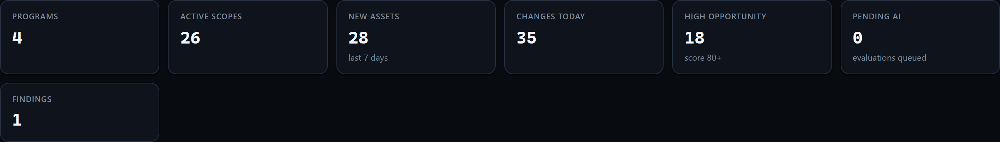
Figure 7. Headline counters, all real aggregates: programs, active scopes,
assets first seen in the last seven days, changes detected today, assets scoring 80+, and
the AI queue depth. Findings and payout cards appear only once that data exists.
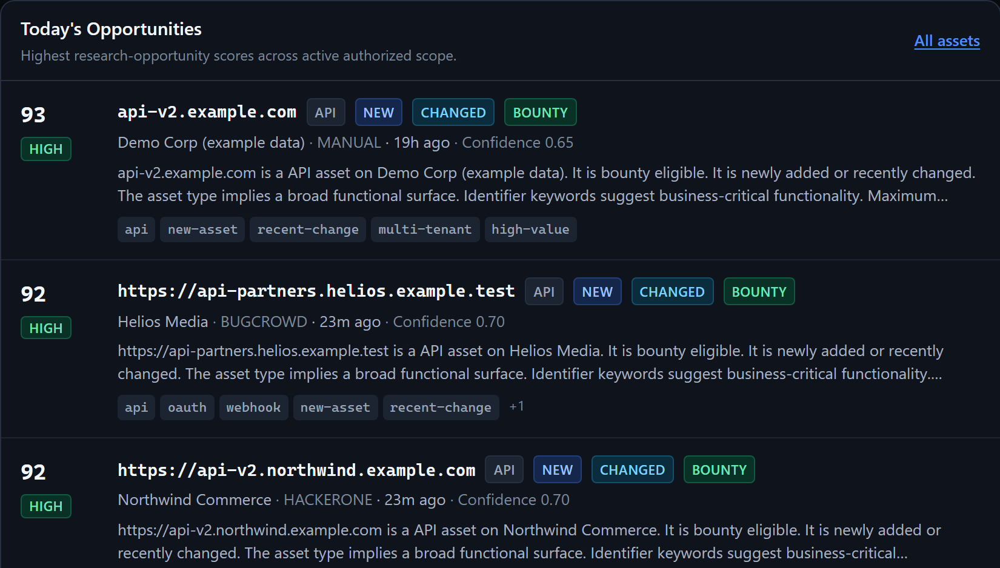
Figure 8.Today's Opportunities — active authorized scope ranked by
Opportunity Score, with band, asset type, NEW / CHANGED / BOUNTY markers, provider
provenance and AI tags.
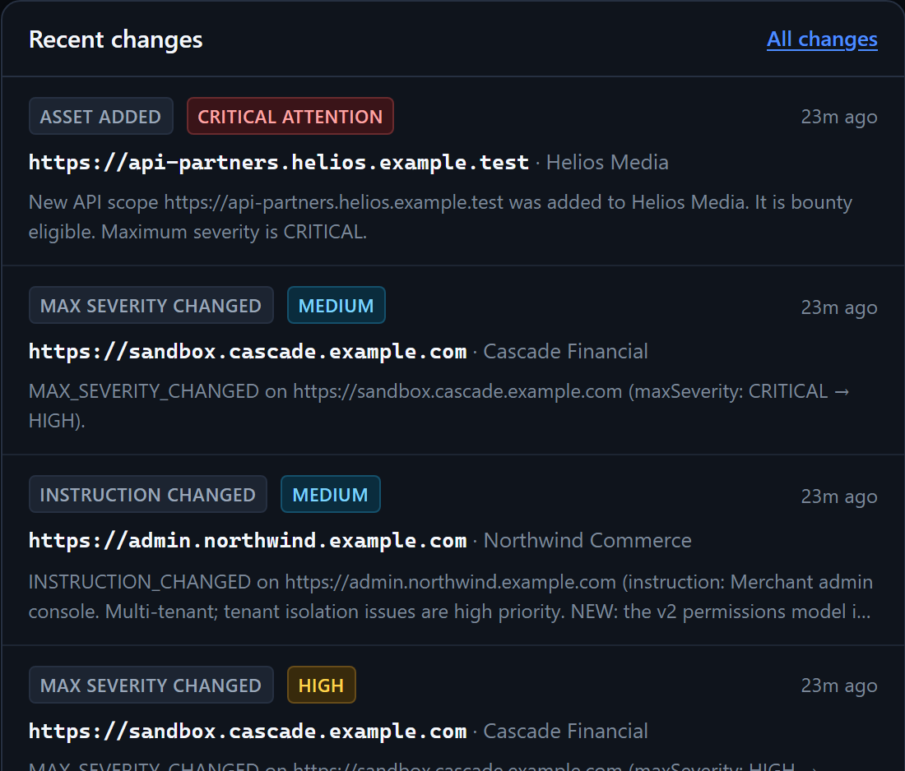
Figure 9. The recent-change feed. CRITICAL ATTENTION denotes
research-review priority — explicitly not vulnerability severity, a distinction the
interface repeats wherever the term appears.
Use case UC-04
Find the assets worth working on
Actor
Researcher with a hypothesis ("new bounty-eligible APIs")
Goal
Narrow thousands of assets to a working set
Result
A filtered, sorted, shareable view
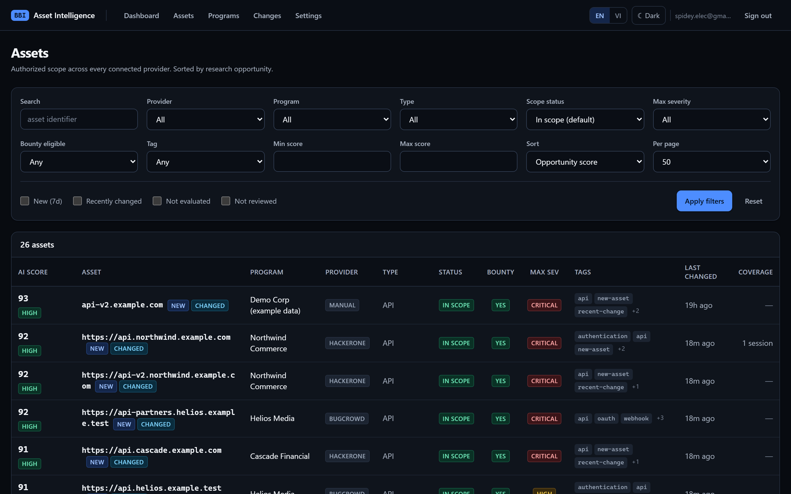
Figure 10. The asset explorer. Columns are weighted so the values a
researcher scans for — score, asset, program, status, bounty, severity — carry more visual
weight than supporting metadata.
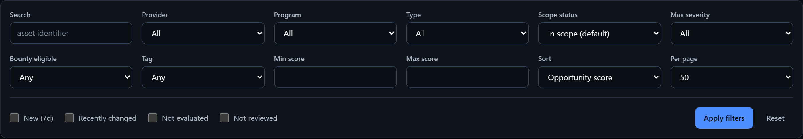
Figure 11. Filters: free-text search, provider, program, asset type, scope
status, maximum severity, bounty eligibility, AI tag, score range, and toggles for new,
recently changed, not evaluated and not reviewed. Sorting covers opportunity, newest,
recently changed, highest severity and least reviewed.
Every filter lives in the URL. The whole page is a plain GET form,
so any view can be bookmarked or shared, works without JavaScript, and is validated by the
same schema the JSON API uses.
Figure 12. Filtered to bounty-eligible assets scoring 85 or above.
"Not evaluated" is not zero. An asset with no completed evaluation
renders as — with an explicit status, and always sorts last. Showing
it as 0 would silently push genuinely unknown assets to the bottom of the list as though they
had been assessed and found worthless.
Use case UC-05
Understand why an asset ranks where it does
Actor
Researcher deciding whether to commit hours to a target
Goal
See the reasoning, not just a number
Result
A dimension-by-dimension breakdown with declared provenance
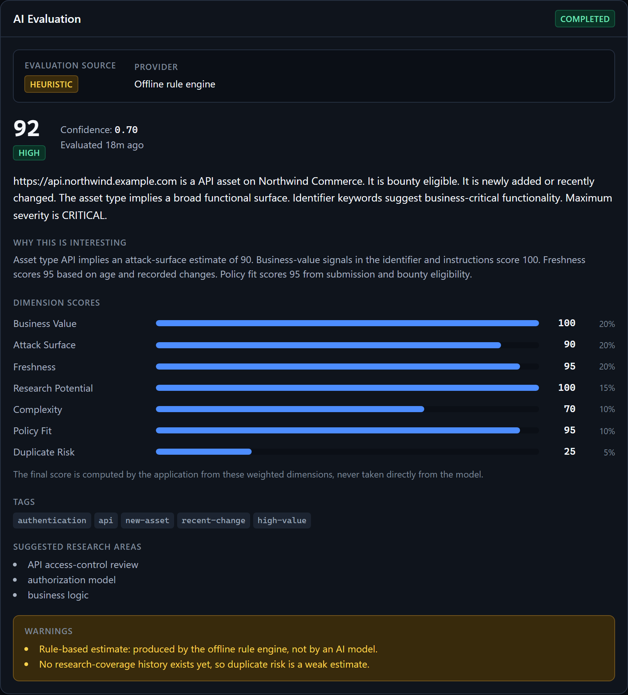
Figure 13. The evaluation panel. Provenance is stated first:
Evaluation Source, the engine, and — for a real model — the exact model id. The score
is decomposed into seven weighted dimensions, and the panel states plainly that the final
score is computed by the application, never taken from the model.
Dimension
Weight
Meaning
Business Value
20%
How important the authorized asset may be to the target's business
Attack Surface
20%
Functional surface area implied by metadata — not likelihood of exploitation
Freshness
20%
Recently added or recently changed scope
Research Potential
15%
Interest for manual authorized research
Complexity
10%
System complexity — not ease of hacking
Policy Fit
10%
How clearly the program permits useful research
Duplicate Risk
5%
Saturation estimate; inverted inside the formula only
Duplicate Risk reads the way you expect. It is displayed as stored —
0 means low risk, 100 means high risk. The inversion happens once, inside the scoring formula.
The label never says "inverted", which would invite the reader to invert it a second time.
Honest limitation. Duplicate risk is estimated only from signals
this installation actually holds — asset age and the researcher's own recorded coverage.
The product has no global bug bounty duplicate statistics and does not pretend to.
Use case UC-06
Confirm research is actually authorized
Actor
Researcher about to begin work
Goal
Be certain the target is in scope and the permission is current
Result
An explicit allow or deny with every failing reason listed
Two questions that look similar are kept strictly apart, because conflating them is how
people end up testing something they should not:
Scope Classification — what the provider says: IN SCOPE, OUT OF SCOPE, REMOVED, UNKNOWN.
Research Authorization — what this system's safety gate concluded: VERIFIED,
USER CONFIRMED, NOT VERIFIED.
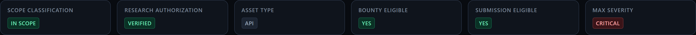
Figure 14. The two are shown side by side and never merged. An asset can be
classified IN SCOPE by the provider while our gate still declines it — because the
integration is disabled, the data has gone stale, or a manual entry was never confirmed.
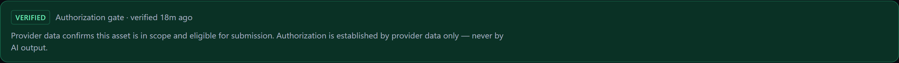
Figure 15. A provider-backed asset that passes every check:
VERIFIED.
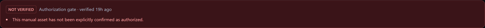
Figure 16. A hand-entered asset. It is classified IN SCOPE, but authorization
is NOT VERIFIED and the exact reason is given. Manual scope requires explicit human
confirmation before the gate will allow it.
The gate defaults to deny and refuses on any of: scope removed,
out of scope, ambiguous status, submission not eligible, program inactive, provider
integration disabled, no provider snapshot, data older than the configured freshness limit, or
unconfirmed manual entry. It reads no AI output whatsoever — a model cannot move an
asset from OUT OF SCOPE or UNKNOWN into IN SCOPE. A test seeds a maximally
confident evaluation on an out-of-scope asset and asserts the gate still denies it.
Use case UC-07
Track what the provider changed
Actor
Researcher returning after a few days
Goal
See every meaningful change since last time
Result
A typed, before/after change feed
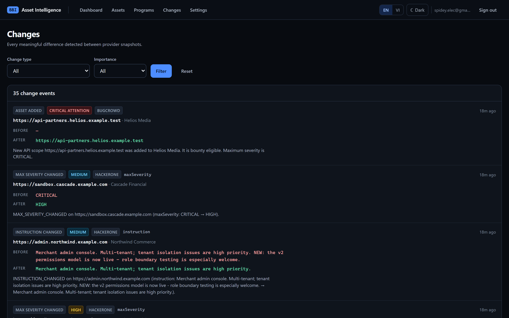
Figure 17. The change feed, filterable by type and importance. Nine typed
events are detected: asset added, asset removed, asset changed, bounty eligibility changed,
submission eligibility changed, max severity changed, instruction changed, policy changed,
program changed.
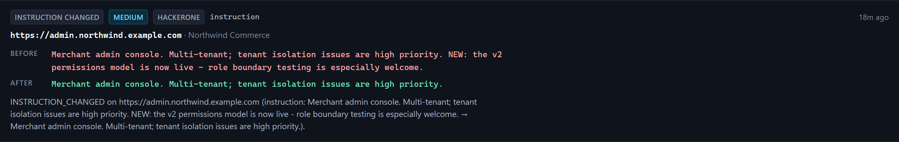
Figure 18. Each change carries explicit before and after values — here a
scope instruction rewritten by the program.
Signal, not noise. Content hashing deliberately excludes provider
timestamps and raw payloads, so a bumped updated_at with unchanged
content produces no event. A scope that disappears is never deleted: it becomes
REMOVED, keeps its full version history, emits ASSET_REMOVED,
and immediately begins failing the authorization gate.
Use case UC-08
Audit an asset's full history
Actor
Researcher writing a report, or re-checking a decision
Goal
Reconstruct what the provider said, and when
Result
Immutable version history, change history and evaluation history
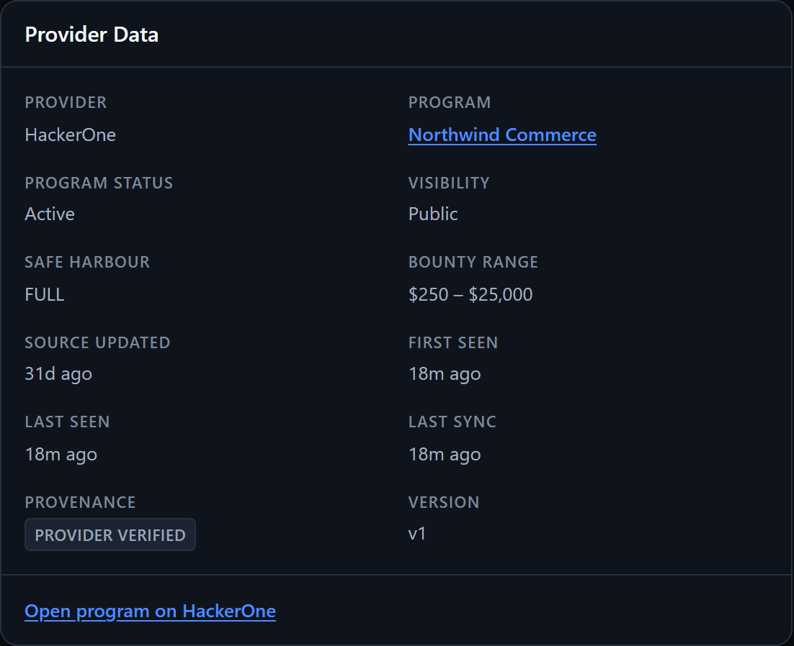
Figure 19. Provider data exactly as received: program status, visibility,
safe harbour, bounty range, when the source last changed, when we first and last saw it,
when the program last synced, and whether the record is provider-verified or manual.
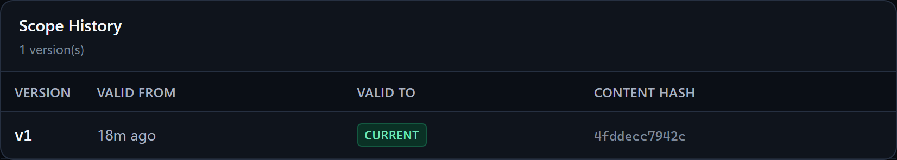
Figure 20. Every meaningful change writes a new immutable version with
validity dates and a content hash. Superseded versions are closed off, never overwritten.
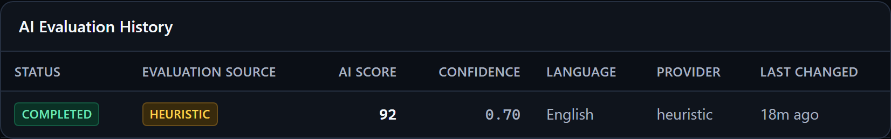
Figure 21. Evaluation history retains every assessment with its status,
source, score, confidence, language and engine — so a superseded evaluation stays auditable
rather than disappearing.
Use case UC-09
Configure the AI provider and key
Actor
Researcher with an Anthropic or OpenAI key
Goal
Switch on model-backed evaluation without redeploying
Figure 22. Settings are grouped rather than piled onto one page.
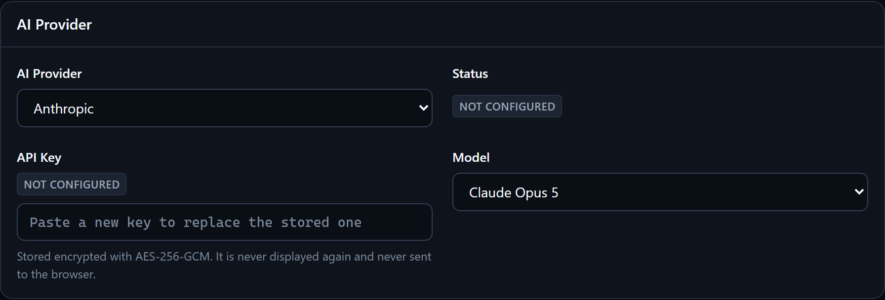
Figure 23. Provider, API key and model. Supported today: Anthropic,
OpenAI, any OpenAI-compatible endpoint (validated HTTPS origin, private and
link-local addresses refused), and the offline rule engine. Each provider offers a model
list plus a Custom model ID field, so a model released after this build can still be
selected.
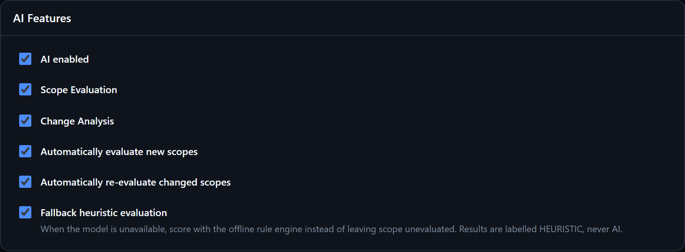
Figure 24. Independent switches for scope evaluation, change analysis,
automatic evaluation of new and changed scope, and heuristic fallback. Temperature and max
tokens sit under Advanced, collapsed by default.
Test Connection is a genuine probe. It issues a single one-token
request server-side — never a full scope evaluation — and reports the real outcome:
Connected, Invalid API key, Permission denied, Rate limited, Provider unavailable, or
Configuration incomplete. It explicitly refuses to fall back to the rule engine, so it can
never report a success that says nothing about the configured provider.
Cost control. Each evaluation is keyed by a hash of its canonical
input. If nothing evaluation-relevant changed, the existing result is reused with no model
call. Age values are bucketed so the hash does not drift daily, and an evaluation's own output
tags are excluded from its hash — otherwise completing an evaluation would invalidate itself
and every asset would pay for a second call.
Use case UC-10
Operate with no AI key at all
Actor
Researcher evaluating the product, or working offline
Goal
Use the whole system without paying for a model
Result
Full functionality, with the reduced confidence stated everywhere
With no key configured the platform scores every asset with a deterministic offline rule
engine. Nothing is disabled. What changes is that the product says so — repeatedly, in every
place the number appears.
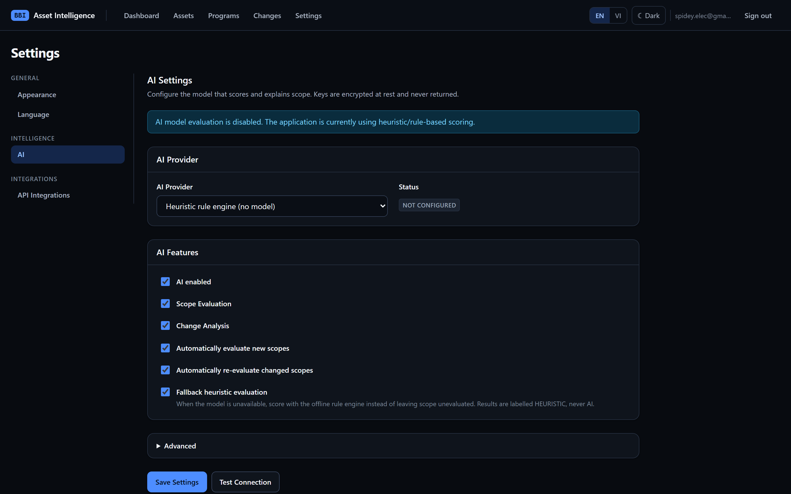
Figure 25. The banner states it directly: "AI model evaluation is
disabled. The application is currently using heuristic/rule-based scoring."
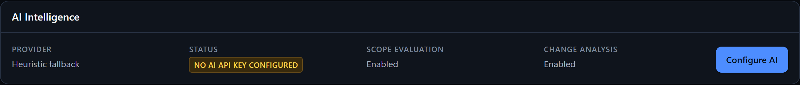
Figure 26. The same fact on the integrations page — provider reported as
Heuristic fallback with a direct route to configure a real model.
Rule-based output is never presented as AI. The evaluation is
stored with its true source, badged HEURISTIC against a real model's AI MODEL,
attributed to "Offline rule engine", and carries the warning "Rule-based estimate: produced
by the offline rule engine, not by an AI model." If a configured model becomes unavailable
and the fallback engages, the resulting evaluation is labelled HEURISTIC — the switch is never
silent.
Use case UC-11
Work in Vietnamese, light or dark
Actor
Vietnamese-speaking researcher
Goal
Use the product in their own language and preferred theme
Result
Preference stored per account, applied with no flash of the wrong theme
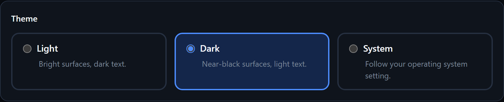
Figure 27. Light, Dark or System.
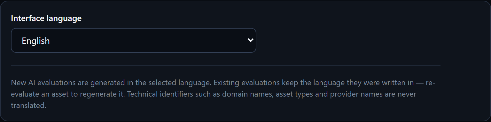
Figure 28. English or Tiếng Việt.
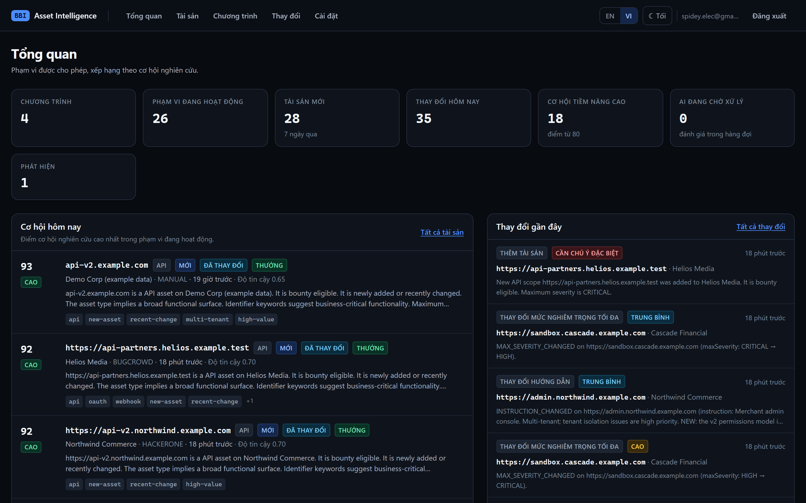
Figure 29. The dashboard in Vietnamese — Tổng quan,
Cơ hội hôm nay, Phạm vi đang hoạt động. Roughly 340 strings are translated;
the English dictionary is the typed source of truth, so a missing translation is a compile
error rather than a blank label.
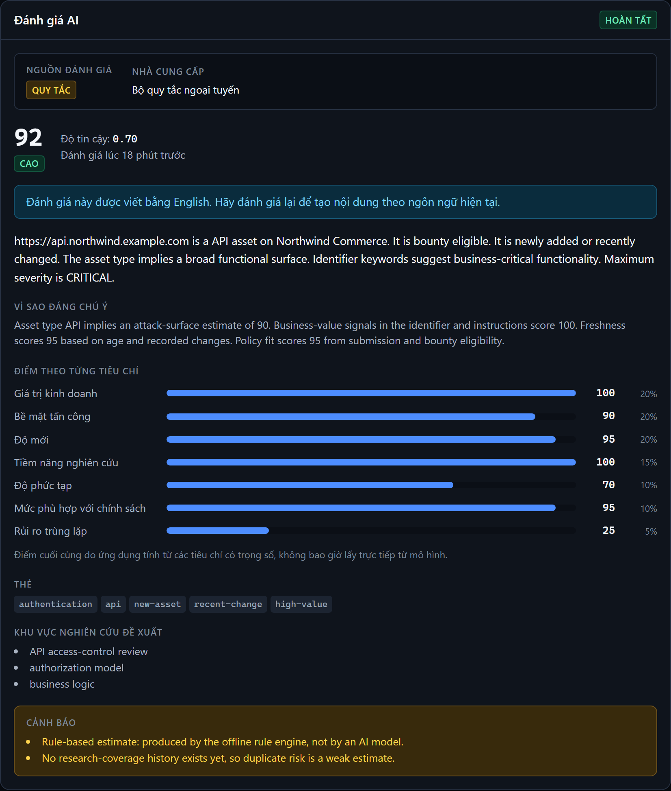
Figure 30. AI output follows the interface language. Technical identifiers —
domain names, asset types, severities, provider names, protocol names — stay verbatim in
every language, because translating them would make them harder to match against the
provider's own dashboard.
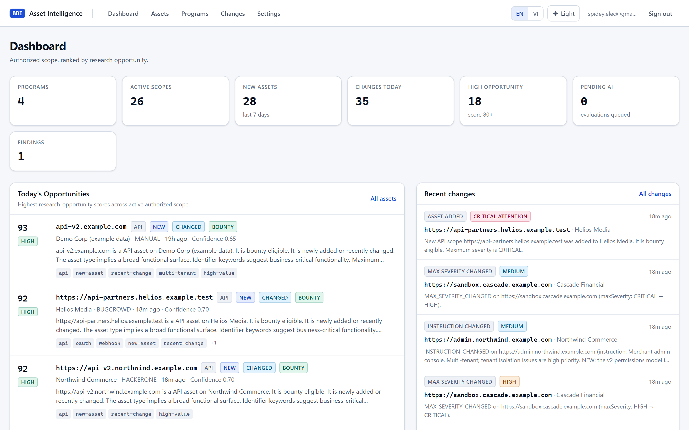
Figure 31. The same dashboard in light mode. Both themes are built from one
set of semantic design tokens, so components carry no theme-specific colour. Measured
contrast is 5.2:1 for the faintest supporting text and 8.8:1 for secondary text — both pass
WCAG AA.
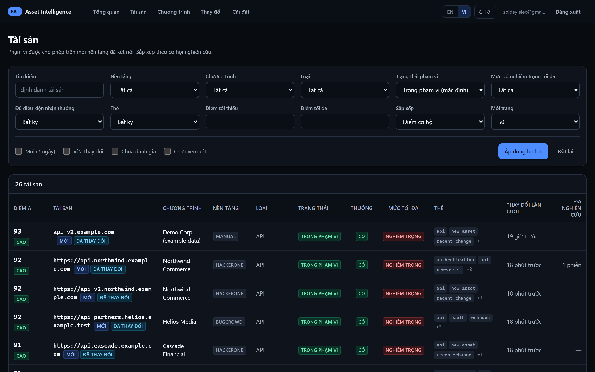
Figure 32. The asset explorer in Vietnamese. Technical identifiers,
asset types and provider names stay in their original form.
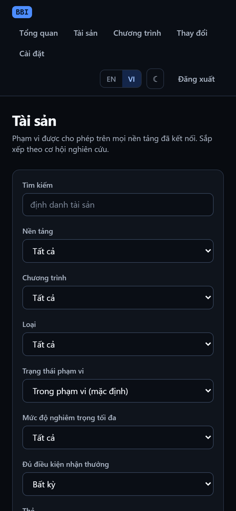
Figure 33. The same screen at 390 px. Filters stack, and the table
scrolls horizontally inside its own container rather than forcing the page to.
Existing evaluations are not re-run when the language changes.
Language is part of an evaluation's cache identity and is stored on the record. Switching the
interface to Vietnamese therefore costs nothing: earlier results keep displaying in the
language they were written in, with an inline offer to re-evaluate. Silently regenerating
every historical evaluation would produce a large, unrequested model bill.
2 · Safety guarantees enforced in code
These are not policies in a document; each is enforced at a specific place in the codebase
and covered by tests.
Guarantee
How it is enforced
AI cannot grant authorization
The safety gate queries provider data only. No evaluation is read. A test seeds a
maximum-confidence evaluation on an out-of-scope asset and asserts it is still denied.
AI cannot set the score
The model returns seven dimensions; the score is a deterministic weighted sum in
application code. Out-of-range and non-finite model output is clamped, not trusted.
No exploitation capability
The system contacts bug bounty platform APIs only. Research suggestions stay at
planning level ("review the tenant isolation model"), never technique level.
Secrets never leave the server
AES-256-GCM at rest with versioned keys; the master key lives in the environment,
never the database. No endpoint returns key material; logs redact by field name.
Prompt injection is contained
Provider policy and scope instructions are third-party text, passed to the model
inside explicit untrusted-data delimiters. Even a successful injection cannot grant
authorization or change a score — both are computed outside the model.
No SSRF primitive
Provider base URLs are server-controlled constants. The one user-supplied URL
(custom AI endpoint) must be an HTTPS origin and private, loopback and link-local
addresses are rejected. Redirects are never followed.
History is never destroyed
Removed scope is marked REMOVED with its versions retained. Superseded evaluations
become STALE rather than being deleted.
Verification status of this build
Check
Result
TypeScript (strict)
clean
ESLint
clean
Automated tests
193 passing / 12 files
Production build
succeeds
3 · Feature matrix and current limitations
Capability
State
Note
HackerOne integration
Implemented
Documented Hacker API; verified end to end in tests
Bugcrowd · Intigriti · YesWeHack
Implemented, unverified
Written against published docs; not exercised against a live account
Manual provider
API only
Records work fully; no UI yet for entering them
Scope inventory, versioning, change detection
Implemented
Idempotent; covered by tests
Opportunity scoring
Implemented
Deterministic; exact arithmetic asserted
Authorization safety gate
Implemented
Default deny; independent of AI
Anthropic / OpenAI / compatible endpoints
Implemented
Structured output, schema-validated twice
Heuristic offline engine
Implemented
Deterministic; always labelled
Light / dark / system theme
Implemented
Semantic tokens; no flash on load
English / Vietnamese
Implemented
~340 strings; type-checked for completeness
Sync health & freshness states
Not built
Run history exists; no HEALTHY/STALE summary
Saved views
Not built
Filters are URL-shareable in the meantime
Watchlist & notifications
Not built
Global search (Cmd/Ctrl-K)
Not built
Per-page search exists
Research workspace
Data model only
Sessions and findings are stored; no UI
AI usage & cost tracking
Not built
Reuse-vs-call is enforced but not reported
Known weaknesses, stated plainly
The rule engine does not discriminate well. On the dataset shown, the top ten assets
all score 84–93 and all band HIGH. When everything is a high opportunity, the ranking carries
little information. A real model produces better spread, but the offline engine's range
should be widened.
Opportunity summaries are repetitive. The rule engine composes from templates, so
consecutive entries read almost identically. The dashboard list should be condensed and the
full explanation left to the detail page.
Two dead ends in the interface. Confirming a manual asset as authorized, and
creating manual programs and scopes, both work through the API but have no UI control.
No sync-health signal on the dashboard. Freshness is visible per asset, but there is
no at-a-glance answer to "is my data current?"
Scale. The asset list reduces its candidate set in memory. It is comfortable at the
current dataset size and will need cursor pagination before tens of thousands of scopes.
Priorities. The three gaps that most affect daily use are sync
health, saved views and a watchlist. Independently of that, widening the rule engine's score
distribution and condensing the dashboard rows are cheap changes that would improve the product
more than any single new feature.